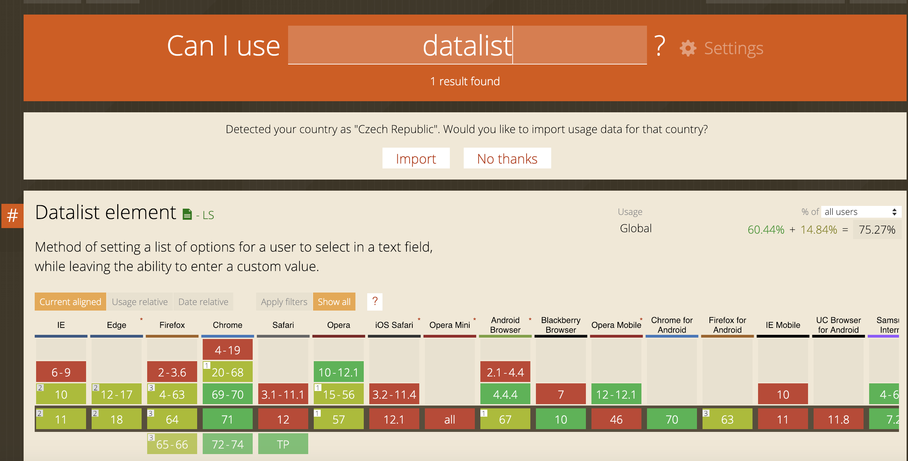
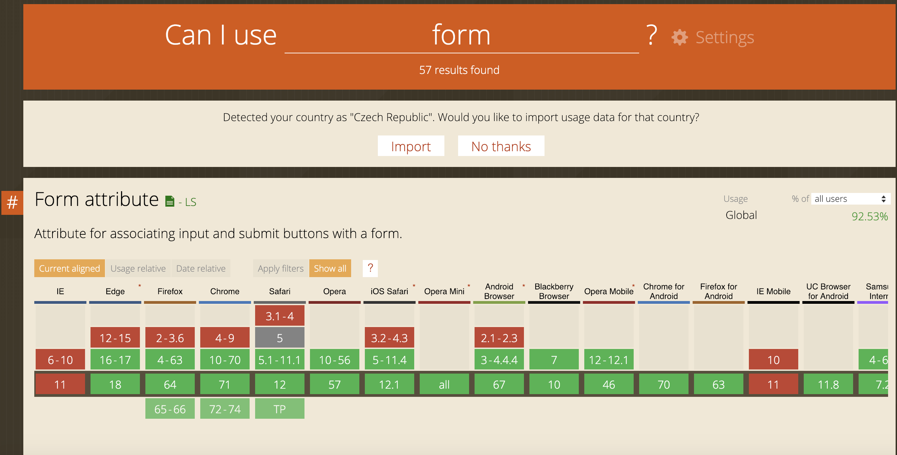
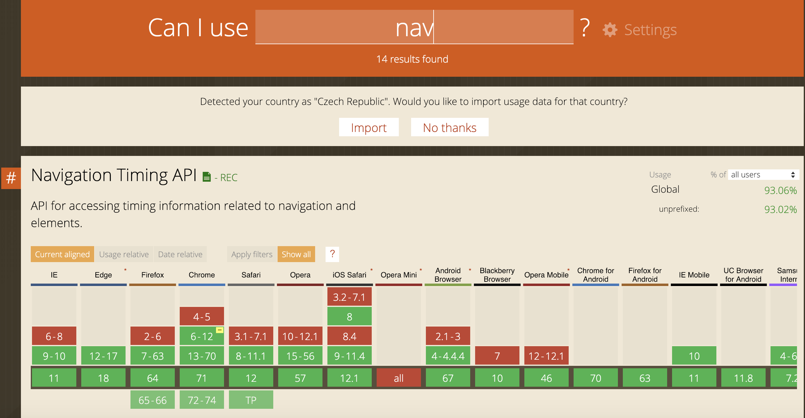
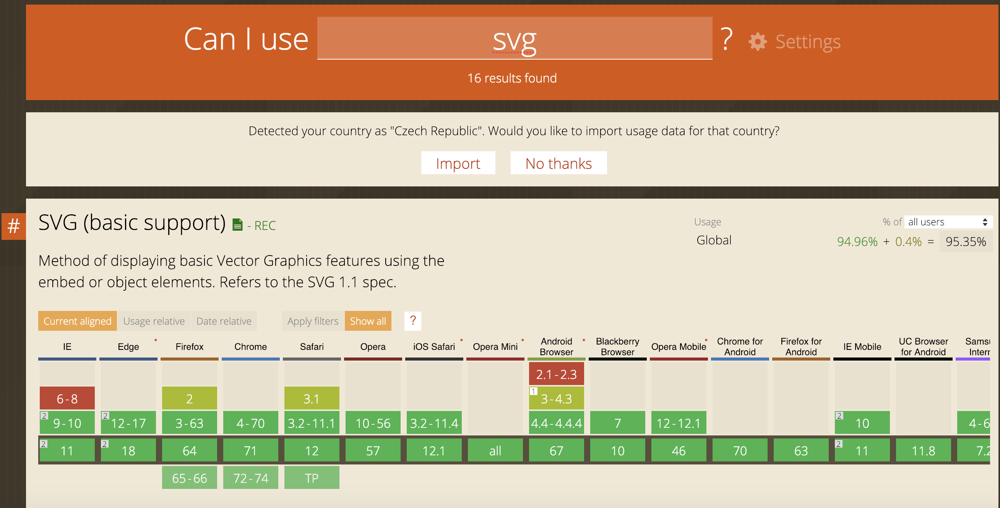

difference between thoose two is that HTML is context of a whole page and CSS is the way it looks, we use it for styling a website.
What is the newest version of HTML?-Newest verison of HTML is HTML5
What are the top five most used HTML5 elements? If not sure, make a guess.I haven't checked it out yet but here is a link for it.
What is the difference between semantic and non-semantic elements?Semantic elements clearly describe its meaning to both browser and the developer while non-semantic elements don't, for example, div or span.
Why do we prefer using semantic elements?Because they give you bigger picture about the element.
Do all browsers support all of the newest HTML / CSS elements?Yes.
Test the following elements on Can I Use: svg, nav, code, form, datalist. Which browser version support them and which do not?Here are some images that shows us where can we use those tags and where not
   